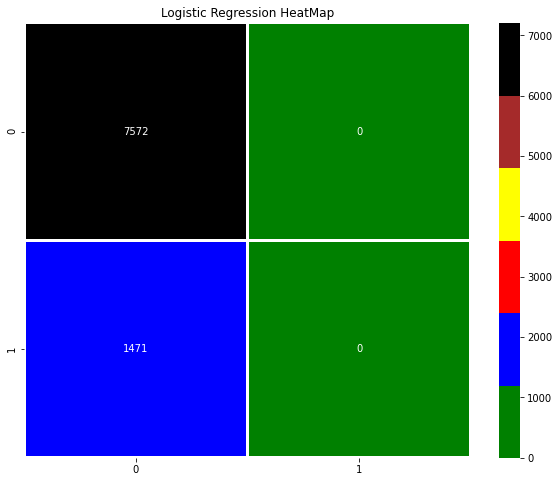
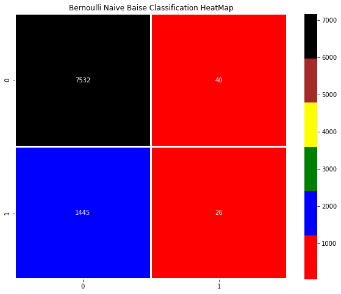
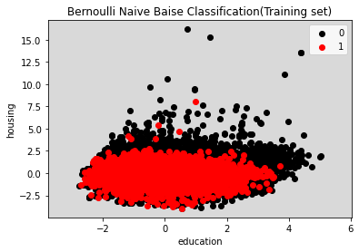
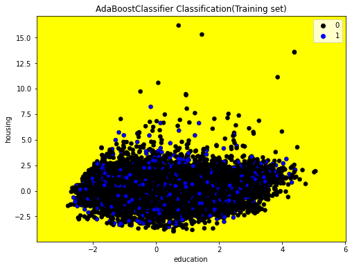
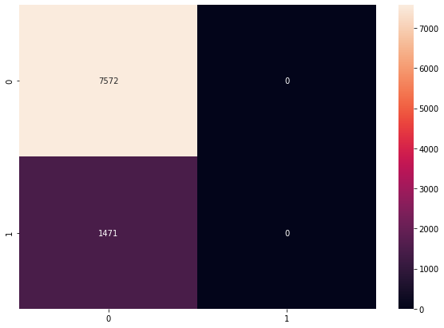
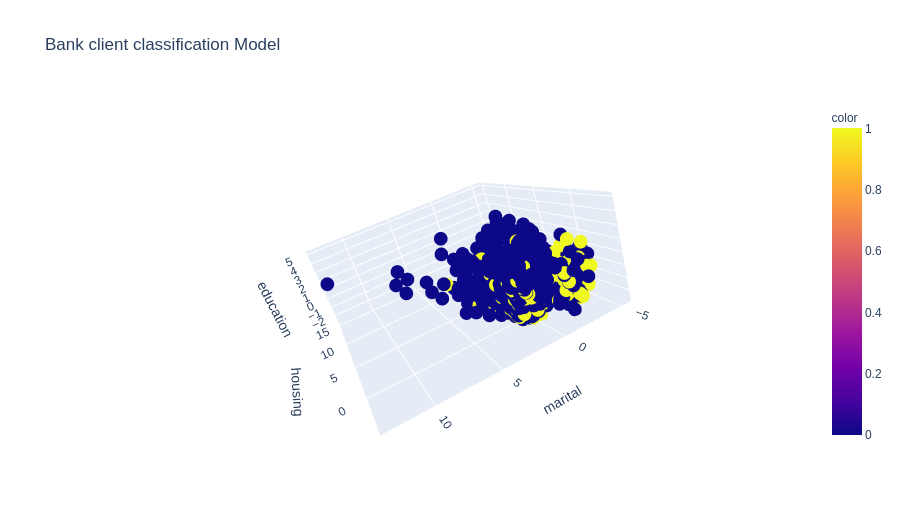

Con il Machine Learning abbiamo molti modelli per effettuare la classificazione di qualsiasi oggetti, documenti,
foto, parole ecc. anche se con il Deep Learning si hanno altri strumenti anche più performanti come la
Convolutional Neural Network o un semplice Artificial Neural Network.
Qui comunque vediamo i principali modelli di classificazione tra i quali:
K-Nearest Neighbors (K-NN) - Logistic Regression - Support Vector Machine (SVM) -
Kernel SVM - Naive Bayes - Decision Tree Classification - Random Forest Classification -
eXtreme Gradient Boosting
Sotto si propongono degli esempi in Python.
import numpy as np
import matplotlib.pyplot as plt
import pandas as pd
from sklearn.model_selection import cross_val_score
from sklearn.metrics import classification_report, plot_confusion_matrix, confusion_matrix, accuracy_score
bank = pd.read_csv('/content/drive/MyDrive/crypto/bank.csv')
numero = range(1,len(bank)+1)
num = pd.Series(numero)
bank.insert(0, 'num' , num)
bank2 = bank.iloc[:,:9]
y = bank.iloc[:,-1]
y = y.map({'yes': 1, 'no': 0})
bank2.notnull()
bank2.fillna(0)
bank2 = bank2.replace(to_replace='yes', value = 1).replace(to_replace='no', value = 0)
bank2 = bank2.replace(to_replace='primary', value = 1).replace(to_replace='secondary', value = 2)
bank2 = bank2.replace(to_replace='tertiary', value = 3)
bank2 = bank2.replace(to_replace=['married', 'management','unknown'], value = 0)
bank2 = bank2.replace(to_replace=['single', 'technician',], value = 1)
bank2 = bank2.replace(to_replace=['divorced', 'entrepreneur',], value = 2)
bank2 = bank2.replace(to_replace='blue-collar', value = 3)
bank2 = bank2.replace(to_replace='admin.', value = 4)
bank2 = bank2.replace(to_replace='self-employed', value = 5)
bank2 = bank2.replace(to_replace='student', value = 6)
bank2 = bank2.replace(to_replace='retired', value = 7)
bank2 = bank2.replace(to_replace='services', value = 8)
bank2 = bank2.replace(to_replace='unemployed', value = 9)
bank2 = bank2.replace(to_replace='housemaid', value = 10)
X = bank2.iloc[:, :-1].values
y = bank2.iloc[:, -1].values
from sklearn.linear_model import LogisticRegression
import matplotlib.pyplot as plt
import seaborn as sns
clf = LogisticRegression(random_state=42).fit(X_train, y_train)
y_pred = clf.predict(X_test)
cm = confusion_matrix(y_test,y_pred)
print('Accuracy Logistic Regression : {:.2f} %'.format(clf.score(X_test,y_test)*100))
modello = 'Logistic Regression HeatMap'
cmap = ['green', 'blue', 'red', 'yellow','brown', 'black']
plt.figure(figsize= (10,8))
plt.title(modello)
sns.heatmap(cm, annot=True,fmt='.7g',cmap=cmap ,cbar= True, robust=True ,linewidths=2.0)
Accuracy Logistic Regression : 83.73 %

from sklearn.model_selection import train_test_split
X_train, X_test, y_train, y_test = train_test_split(X, y, test_size = 0.2, random_state = 0)
from xgboost import XGBClassifier
classifier = XGBClassifier()
classifier.fit(X_train, y_train)
from sklearn.metrics import confusion_matrix, accuracy_score, classification_report
y_pred = classifier.predict(X_test)
cm = confusion_matrix(y_test, y_pred)
print(cm)
print(accuracy_score(y_test, y_pred)*100 ,'%')
[[7536 36]
[1405 66]]
84.06502266946809 %
print(classification_report(y_test, y_pred))
precision recall f1-score support
0 0.84 1.00 0.91 7572
1 0.65 0.04 0.08 1471
accuracy 0.84 9043
macro avg 0.74 0.52 0.50 9043
weighted avg 0.81 0.84 0.78 9043
Applying k-Fold Cross Validation
accuracies = cross_val_score(estimator = classifier, X = X_train, y = y_train, verbose= 1, cv = 10)
print("Accuracy: {:.2f} %".format(accuracies.mean()*100))
print("Standard Deviation: {:.2f} %".format(accuracies.std()*100))
print("Max Accuracy: {:.2f} %".format(accuracies.max()*100))
print("Min Accuracy: {:.2f} %".format(accuracies.min()*100))
Accuracy: 84.36 %
Standard Deviation: 0.24 %
Max Accuracy: 84.82 %
Min Accuracy: 83.85 %
from sklearn import svm
cls_sv = svm.SVC()
cls_sv.fit(X = X_train, y = y_train)
accuracy = cross_val_score(estimator = cls_sv, X = X_train, y = y_train, verbose= 0, cv = 10)
print("Accuracy: {:.2f} %".format(accuracy.mean()*100))
print("Max Accuracy: {:.2f} %".format(accuracy.max()*100))
print("Min Accuracy: {:.2f} %".format(accuracy.min()*100))
print("Standard Deviation: {:.2f} %".format(accuracy.std()*100))
Accuracy: 84.04 %
Max Accuracy: 84.05 %
Min Accuracy: 84.02 %
Standard Deviation: 0.01 %
Con la Class MLPClassifier creiamo in Multiplayer perceptron (MLP) algorithm - neural network
from sklearn.neural_network import MLPClassifier
clf = MLPClassifier(solver='lbfgs', alpha=1e-5,
hidden_layer_sizes=(15,), random_state=1)
clf.fit(X = X_train, y = y_train)
accuracy = cross_val_score(estimator = clf, X = X_train, y = y_train, verbose= 0, cv = 10)
print("Accuracy: {:.2f} %".format(accuracy.mean()*100))
print("Max Accuracy: {:.2f} %".format(accuracy.max()*100))
print("Min Accuracy: {:.2f} %".format(accuracy.min()*100))
print("Standard Deviation: {:.2f} %".format(accuracy.std()*100))
Accuracy: 83.94 %
Max Accuracy: 84.05 %
Min Accuracy: 83.72 %
Standard Deviation: 0.12 %
Ensemble methods
from sklearn.ensemble import GradientBoostingClassifier
clf = GradientBoostingClassifier(n_estimators=100, learning_rate=1.0,
max_depth=1, random_state=0)
clf.fit(X_train, y_train)
print(clf.score(X_test, y_test))
accuracy = cross_val_score(estimator = clf, X = X_train, y = y_train, verbose= 0, cv = 10)
print("Accuracy: {:.2f} %".format(accuracy.mean()*100))
print("Max Accuracy: {:.2f} %".format(accuracy.max()*100))
print("Min Accuracy: {:.2f} %".format(accuracy.min()*100))
print("Standard Deviation: {:.2f} %".format(accuracy.std()*100))
0.8383279884993918
Accuracy: 84.11 %
Max Accuracy: 84.43 %
Min Accuracy: 83.83 %
Standard Deviation: 0.17 %
from sklearn.ensemble import BaggingClassifier
from sklearn.neighbors import KNeighborsClassifier
clf = BaggingClassifier(KNeighborsClassifier(),
max_samples=0.5, max_features=0.5)
clf.fit(X_train, y_train)
print(clf.score(X_test, y_test))
accuracy = cross_val_score(estimator = clf, X = X_train, y = y_train, verbose= 0, cv = 10)
print("Accuracy: {:.2f} %".format(accuracy.mean()*100))
print("Max Accuracy: {:.2f} %".format(accuracy.max()*100))
print("Min Accuracy: {:.2f} %".format(accuracy.min()*100))
print("Standard Deviation: {:.2f} %".format(accuracy.std()*100))
0.837996240185779
Accuracy: 84.07 %
Max Accuracy: 84.16 %
Min Accuracy: 83.99 %
Standard Deviation: 0.05 %
from sklearn.ensemble import RandomForestClassifier
clf = RandomForestClassifier(n_estimators=10)
clf.fit(X_train, y_train)
print(clf.score(X_test, y_test))
accuracy = cross_val_score(estimator = clf, X = X_train, y = y_train, verbose= 0, cv = 10)
print("Accuracy: {:.2f} %".format(accuracy.mean()*100))
print("Max Accuracy: {:.2f} %".format(accuracy.max()*100))
print("Min Accuracy: {:.2f} %".format(accuracy.min()*100))
print("Standard Deviation: {:.2f} %".format(accuracy.std()*100))
0.8264956319805374
Accuracy: 83.23 %
Max Accuracy: 83.72 %
Min Accuracy: 82.36 %
Standard Deviation: 0.39 %
from sklearn.tree import DecisionTreeClassifier
clf = DecisionTreeClassifier(max_depth=None, min_samples_split=2,
random_state=0)
clf.fit(X_train, y_train)
print(clf.score(X_test, y_test))
accuracy = cross_val_score(estimator = clf, X = X_train, y = y_train, verbose= 0, cv = 10)
print("Accuracy: {:.2f} %".format(accuracy.mean()*100))
print("Max Accuracy: {:.2f} %".format(accuracy.max()*100))
print("Min Accuracy: {:.2f} %".format(accuracy.min()*100))
print("Standard Deviation: {:.2f} %".format(accuracy.std()*100))
0.7496406059935862
Accuracy: 75.47 %
Max Accuracy: 76.44 %
Min Accuracy: 74.45 %
Standard Deviation: 0.63 %
from sklearn.ensemble import RandomForestClassifier
clf = RandomForestClassifier(n_estimators=10, max_depth=None,
min_samples_split=2, random_state=0)
clf.fit(X_train, y_train)
print(clf.score(X_test, y_test))
accuracy = cross_val_score(estimator = clf, X = X_train, y = y_train, verbose= 0, cv = 10)
print("Accuracy: {:.2f} %".format(accuracy.mean()*100))
print("Max Accuracy: {:.2f} %".format(accuracy.max()*100))
print("Min Accuracy: {:.2f} %".format(accuracy.min()*100))
print("Standard Deviation: {:.2f} %".format(accuracy.std()*100))
0.8278226252349884
Accuracy: 83.30 %
Max Accuracy: 83.85 %
Min Accuracy: 82.64 %
Standard Deviation: 0.40 %
from sklearn.ensemble import ExtraTreesClassifier
clf = ExtraTreesClassifier(n_estimators=10, max_depth=None,
min_samples_split=2, random_state=0)
clf.fit(X_train, y_train)
print(clf.score(X_test, y_test))
accuracy = cross_val_score(estimator = clf, X = X_train, y = y_train, verbose= 0, cv = 10)
print("Accuracy: {:.2f} %".format(accuracy.mean()*100))
print("Max Accuracy: {:.2f} %".format(accuracy.max()*100))
print("Min Accuracy: {:.2f} %".format(accuracy.min()*100))
print("Standard Deviation: {:.2f} %".format(accuracy.std()*100))
0.8193077518522615
Accuracy: 82.38 %
Max Accuracy: 82.83 %
Min Accuracy: 81.92 %
Standard Deviation: 0.29 %
from sklearn.ensemble import AdaBoostClassifier
clf = AdaBoostClassifier(n_estimators=100)
clf.fit(X_train, y_train)
print(clf.score(X_test, y_test))
accuracy = cross_val_score(estimator = clf, X = X_train, y = y_train, verbose= 0, cv = 10)
print("Accuracy: {:.2f} %".format(accuracy.mean()*100))
print("Max Accuracy: {:.2f} %".format(accuracy.max()*100))
print("Min Accuracy: {:.2f} %".format(accuracy.min()*100))
print("Standard Deviation: {:.2f} %".format(accuracy.std()*100))
0.8376644918721663
Accuracy: 84.07 %
Max Accuracy: 84.21 %
Min Accuracy: 83.88 %
Standard Deviation: 0.11 %
from sklearn.ensemble import GradientBoostingClassifier
clf = GradientBoostingClassifier(n_estimators=100, learning_rate=1.0,
max_depth=1, random_state=0)
clf.fit(X_train, y_train)
print(clf.score(X_test, y_test))
accuracy = cross_val_score(estimator = clf, X = X_train, y = y_train, verbose= 0, cv = 10)
print("Accuracy: {:.2f} %".format(accuracy.mean()*100))
print("Max Accuracy: {:.2f} %".format(accuracy.max()*100))
print("Min Accuracy: {:.2f} %".format(accuracy.min()*100))
print("Standard Deviation: {:.2f} %".format(accuracy.std()*100))
0.8383279884993918
Accuracy: 84.11 %
Max Accuracy: 84.43 %
Min Accuracy: 83.83 %
Standard Deviation: 0.17 %
from sklearn.experimental import enable_hist_gradient_boosting
from sklearn.ensemble import HistGradientBoostingClassifier
clf = HistGradientBoostingClassifier(max_iter=100)
clf.fit(X_train, y_train)
print(clf.score(X_test, y_test))
accuracy = cross_val_score(estimator = clf, X = X_train, y = y_train, verbose= 0, cv = 10)
print("Accuracy: {:.2f} %".format(accuracy.mean()*100))
print("Max Accuracy: {:.2f} %".format(accuracy.max()*100))
print("Min Accuracy: {:.2f} %".format(accuracy.min()*100))
print("Standard Deviation: {:.2f} %".format(accuracy.std()*100))
0.8403184783810682
Accuracy: 84.33 %
Max Accuracy: 84.79 %
Min Accuracy: 83.83 %
Standard Deviation: 0.28 %
Voting Classifier Hard
from sklearn.naive_bayes import GaussianNB
from sklearn.ensemble import RandomForestClassifier
from sklearn.ensemble import VotingClassifier
from sklearn.ensemble import AdaBoostClassifier
clf1 = AdaBoostClassifier(n_estimators=100)
clf2 = RandomForestClassifier(n_estimators=50, random_state=1)
clf3 = GaussianNB()
clfv = VotingClassifier(
estimators=[('ada', clf1), ('rf', clf2), ('gnb', clf3)],
voting='hard')
for clf, classifier in zip([clf1, clf2, clf3, clfv], ['AdaBoost', 'Random Forest', 'naive Bayes', 'Ensemble']):
scores = cross_val_score(clf, X_train, y_train, scoring='accuracy', cv=10)
print("Accuracy: %0.3f (Standard Deviation: %0.3f) [%s]" % (scores.mean(), scores.std(), classifier))
Accuracy: 0.841 (Standard Deviation: 0.001) [AdaBoost]
Accuracy: 0.837 (Standard Deviation: 0.004) [Random Forest]
Accuracy: 0.840 (Standard Deviation: 0.000) [naive Bayes]
Accuracy: 0.842 (Standard Deviation: 0.001) [Ensemble]
Voting Classifier Soft
from sklearn.tree import DecisionTreeClassifier
from sklearn.neighbors import KNeighborsClassifier
from sklearn.svm import SVC
from sklearn.ensemble import VotingClassifier
clf1 = DecisionTreeClassifier(max_depth=4)
clf2 = KNeighborsClassifier(n_neighbors=7)
clf3 = SVC(kernel='poly', probability=True)
clfv = VotingClassifier(estimators=[('dtc', clf1), ('knn', clf2), ('svm', clf3)],
voting='soft', weights=[2, 1, 2])
for clf, classifier in zip([clf1, clf2, clf3, clfv], ['DecisionTree', 'KNN', 'SVM', 'Ensemble']):
scores = cross_val_score(clf, X_train, y_train, scoring='accuracy', cv=10)
print("[%s] Accuracy: %0.3f (Standard Deviation: %0.3f) " % ( classifier, scores.mean(), scores.std()))
[DecisionTree] Accuracy: 0.842 (Standard Deviation: 0.002)
[KNN] Accuracy: 0.831 (Standard Deviation: 0.003)
[SVM] Accuracy: 0.840 (Standard Deviation: 0.000)
[Ensemble] Accuracy: 0.840 (Standard Deviation: 0.000)
clf = GaussianNB()
clf.fit(X_train, y_train)
print(clf.score(X_test, y_test))
accuracy = cross_val_score(estimator = clf, X = X_train, y = y_train, verbose= 0, cv = 10)
print("Accuracy: {:.2f} %".format(accuracy.mean()*100))
print("Max Accuracy: {:.2f} %".format(accuracy.max()*100))
print("Min Accuracy: {:.2f} %".format(accuracy.min()*100))
print("Standard Deviation: {:.2f} %".format(accuracy.std()*100))
0.8373327435585536
Accuracy: 84.04 %
Max Accuracy: 84.05 %
Min Accuracy: 84.02 %
Standard Deviation: 0.01 %
from sklearn.naive_bayes import BernoulliNB
clf = BernoulliNB()
clf.fit(X_train, y_train)
print(clf.score(X_test, y_test))
accuracy = cross_val_score(estimator = clf, X = X_train, y = y_train, verbose= 0, cv = 10)
print("Accuracy: {:.2f} %".format(accuracy.mean()*100))
print("Max Accuracy: {:.2f} %".format(accuracy.max()*100))
print("Min Accuracy: {:.2f} %".format(accuracy.min()*100))
print("Standard Deviation: {:.2f} %".format(accuracy.std()*100))
y_pred = clf.predict(X_test)
cm = confusion_matrix(y_test,y_pred)
import matplotlib.pyplot as plt
import seaborn as sns
modello = 'Bernoulli Naive Baise Classification HeatMap'
cmap = ['red', 'blue', 'green', 'yellow','brown', 'black']
plt.figure(figsize= (10,8))
plt.title(modello)
sns.heatmap(cm, annot=True,fmt='.7g',cmap=cmap ,cbar= True, robust=True ,linewidths=2.0)
0.8357845847616941
Accuracy: 83.79 %
Max Accuracy: 83.94 %
Min Accuracy: 83.55 %
Standard Deviation: 0.13 %

from sklearn.decomposition import PCA
pca = PCA(n_components=2)
from sklearn.preprocessing import StandardScaler
sc = StandardScaler()
x_train = sc.fit_transform(X_train)
x_test = sc.transform(X_test)
pca.fit(x_train)
x_train = pca.transform(x_train)
from sklearn.naive_bayes import BernoulliNB
clf = BernoulliNB()
clf.fit(x_train,y_train)
headerI = [ x for x in bank2.columns ] # header input
comp = pca.n_components_
index_comp = [np.abs(pca.components_[i]).argmax() for i in range(comp)]
# cerco index columns selezionata
input1 = headerI[index_comp[0]]
input2 = headerI[index_comp[1]]
from matplotlib.colors import ListedColormap
x1, x2 = np.meshgrid(np.arange(start = x_train[:, 0].min() - 1, stop = x_train[:, 0].max() + 1, step = 0.01),
np.arange(start = x_train[:, 1].min() - 1, stop = x_train[:, 1].max() + 1, step = 0.01))
plt.contourf(x1, x2, clf.predict(np.array([x1.ravel(), x2.ravel()]).T).reshape(x1.shape),
alpha = 0.15, cmap = ListedColormap(('black', 'red')))
plt.xlim(x1.min(), x1.max())
plt.ylim(x2.min(), x2.max())
for i, j in enumerate(np.unique( y_train)):
plt.scatter( x_train[y_train == j, 0], x_train[y_train == j, 1],
color = ListedColormap(('black','red'))(i), label = j)
plt.title('Bernoulli Naive Baise Classification(Training set)')
plt.xlabel(input1)
plt.ylabel(input2)
plt.legend()
plt.show()

import numpy as np
import matplotlib.pyplot as plt
import seaborn as sns
from matplotlib.colors import ListedColormap
from sklearn.ensemble import AdaBoostClassifier
X, y = x_train, y_train
h = .05 # step size for mesh
cmap_light = ListedColormap(['yellow'])
cmap_bold = ['black', 'blue']
clf = AdaBoostClassifier(n_estimators=100)
clf.fit(X, y)
x_min, x_max = X[:, 0].min() - 1, X[:, 0].max() + 1
y_min, y_max = X[:, 1].min() - 1, X[:, 1].max() + 1
xx, yy = np.meshgrid(np.arange(x_min, x_max, h),
np.arange(y_min, y_max, h))
Z = clf.predict(np.c_[xx.ravel(), yy.ravel()])
Z = Z.reshape(xx.shape)
plt.figure(figsize=(8, 6))
plt.contourf(xx, yy, Z, cmap=cmap_light)
sns.scatterplot(x=X[:, 0], y=X[:, 1], hue=y, palette=cmap_bold, alpha=1.0, edgecolor="black")
plt.xlim(xx.min(), xx.max())
plt.ylim(yy.min(), yy.max())
plt.title('AdaBoostClassifier Classification(Training set)')
plt.xlabel(input1)
plt.ylabel(input2)
plt.show()

from sklearn.linear_model import SGDClassifier
from sklearn.preprocessing import StandardScaler
from sklearn.pipeline import Pipeline
sgd = SGDClassifier()
scaler = StandardScaler()
clf = Pipeline([('scaler', scaler), ('sgd', sgd)])
clf.fit(X_train, y_train)
accuracy = cross_val_score(estimator = clf, X = X_train, y = y_train, verbose= 0, cv = 10)
print("Accuracy: {:.2f} %".format(accuracy.mean()*100))
print("Max Accuracy: {:.2f} %".format(accuracy.max()*100))
print("Min Accuracy: {:.2f} %".format(accuracy.min()*100))
print("Standard Deviation: {:.2f} %".format(accuracy.std()*100))
y_pred = clf.predict(X_test)
cm = confusion_matrix(y_test,y_pred)
import matplotlib.pyplot as plt
import seaborn as sns
plt.figure(figsize= (10,7))
sns.heatmap(cm, annot=True,fmt='.5g' )
Accuracy: 84.04 %
Max Accuracy: 84.05 %
Min Accuracy: 84.02 %
Standard Deviation: 0.01 %

import numpy as np
import matplotlib.pyplot as plt
import seaborn as sns
from matplotlib.colors import ListedColormap
from sklearn.linear_model import SGDClassifier
from sklearn.model_selection import train_test_split
from sklearn.preprocessing import StandardScaler
from sklearn.decomposition import PCA
clf = SGDClassifier()
h = .03 # step size in the mesh
X = bank2.iloc[:, :-1].values
y = bank2.iloc[:, -1].values
pca = PCA(n_components=3)
sc = StandardScaler()
X = sc.fit_transform(X)
#x_test = sc.transform(X_test)
pca.fit(X)
X = pca.transform(X)
X_train, X_test, y_train, y_test = train_test_split(X, y, test_size=.2, random_state=42)
clf.fit(X_train, y_train)
x_min, x_max = X[:, 0].min() - 1, X[:, 0].max() + 1
y_min, y_max = X[:, 1].min() - 1, X[:, 1].max() + 1
z_min, z_max = X[:, 2].min() - 1, X[:, 2].max() + 1
xx, yy ,zz = np.meshgrid(np.arange(x_min, x_max, h),
np.arange(y_min, y_max, h),
np.arange(z_min, z_max, h) )
cm = plt.cm.RdBu
cm_bright = ListedColormap([ '#ffffff', '#0000FF','#660055'])
cm.monochrome
headerI = [ x for x in bank2.columns ] # header input
comp = pca.n_components_
index_comp = [np.abs(pca.components_[i]).argmax() for i in range(comp)]
# cerco index columns selezionata
input1 = headerI[index_comp[0]]
input2 = headerI[index_comp[1]]
input3 = headerI[index_comp[2]]
df = pd.DataFrame(X_test, columns=[input1,input2,input3])
import plotly.express as pe
fig = pe.scatter_3d(df, x=input1, y=input2 ,z=input3,color=y_test, title='Bank client classification Model', width=900)
fig.show()
